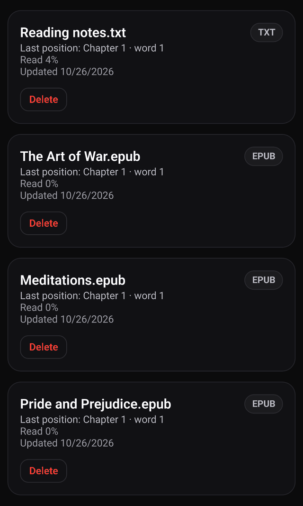
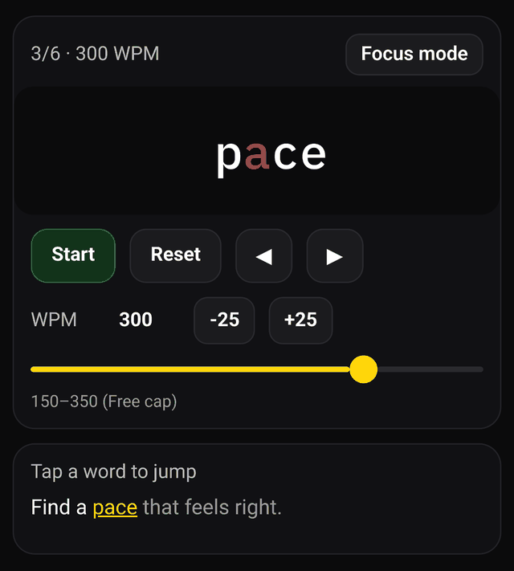

Read your EPUB books one word at a time
WordBlip is a speed reading app for iPhone that shows text one word at a time, in the same spot, at a pace you choose. With WordBlip Pro you can import your own EPUB books, open any chapter, and read it word by word. WordBlip remembers the chapter and the word where you stopped.
EPUB import is a Pro feature. The free version lets you paste text and read it one word at a time. Importing EPUB or TXT files and keeping them in a Library needs Pro.

How it works
- Import. In the Read tab, tap Import book and pick an EPUB or TXT file from the Files app on your iPhone.
- Pick a chapter. WordBlip splits the book into its chapters and adds it to your Library, which shows each book with its last position.
- Read. Choose a chapter and press Start. Each word lines up on a red focus letter, so your eyes have one point to rest on. Set the pace in words per minute with the slider or the −25 and +25 buttons.
- Come back later. WordBlip saves the chapter and the word you reached. Open the book again and tap Resume to carry on from that word.
Lost the thread mid-sentence? Pause, then tap a word in the text below the reader to jump back to it.

Why read a book this way
Some people find a full page busy on a phone screen. With one word at a time, there's only one thing to look at, and you decide the pace. It suits stories, essays and nonfiction you read from start to finish, in short sittings: a chapter on the bus, a few pages before bed.
It isn't the right tool for every book. Tables, diagrams, code, poetry with careful line breaks, or anything you need to flip back and forth through, is better read as a normal page. WordBlip shows the text only, not images or page layout.
Which files work
- EPUB files that you have on your iPhone, for example in Files or iCloud Drive.
- TXT plain-text files.
- If you just want to try a passage, copy it and paste it into the reader. That's free.
WordBlip reads the text inside the file; it doesn't sell or download books. Books bought in another store's app usually can't be exported as plain EPUB files, so they may not import.
Try it free first
You don't need Pro to find out whether one-word-at-a-time reading works for you:
Free
- Copy a page from any book you own as text, paste it into the reader, and read it, up to 350 WPM. Free.
- Do an Easy training session: a warm-up, a short passage, then one or two questions to check what stuck. Free.
Pro
WordBlip shows the Pro screen on its own once, after your first training session. Close it and the free features keep working. When you're ready to bring your EPUB books in, Pro unlocks import and the Library, plus Medium and Hard training, paces above 350 WPM and your full progress history.
More about the reader itself: what an RSVP reader app does.
Get WordBlip on the App Store
FAQ
Can I read EPUB files for free?
No. EPUB and TXT import, and the Library they go into, are part of WordBlip Pro. Pasting text into the reader is free.
Does WordBlip remember where I stopped in a book?
Yes. It saves the chapter and the word you reached. Tap Resume on the book to carry on from there.
Can I jump to a different chapter?
Yes. Each imported book shows its list of chapters, and you can open any of them.
Will DRM-protected books work?
Usually not. WordBlip needs the text inside the file, and copy-protected files don't expose it. If a file can't be opened, WordBlip tells you and you can try a different copy.
Where are my imported books kept?
In the app's Library on your iPhone.
Is there a daily routine I can follow?
Yes, the Training tab gives you a short session a day with comprehension questions. See a daily reading focus practice.